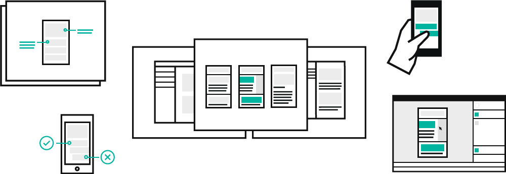

IBM Design Practices
Core Practices Team
Projects
- IBM Design Thinking
- IBM Design Language
- Research for the Chairman
Role
At IBM Design I worked on the Core Practices Team, creating and delivering tools and resources to help diverse teams work better together, and further a user-centric culture. My work focused on furthering the craft, practice, and scalability of design across IBM’s business units.
Work
I have had the fortune to play multiple roles, conducting research, wireframing experiences, and designing systems and final assets for a range of projects. Most recently I developed the visual system for the IBM Design Research site. Previously, I led the design of a flexible type and spacing system for IBM Design Thinking site and future ibm.com/design properties. Other roles include: contributor designer to IBM Design Language, and assistant researcher for app request from the Chairman.
IBM Design Thinking
The intention of the IBM Design Thinking update was to provide increased access to the material and widen its reach, or to increase its adaptability. IBM Design Thinking was introduced with the inception of the design initiative. It provides scaffolding for teams across IBM, whether product or client facing. While it shares some similarities with other design thinking methods, it has a few modifications, including sponsor users, playbacks, and hills, to increase scalability, speed, and alignment.
I worked in conjunction with content creators and developers to create a customizable type and grid system to decrease the time and effort needed to release new content, tools, and other resources to the greater IBM. I also played a contribution role to the visual design.


Process
To kick off the project, I analyzed past content noting what was successful and unsuccessful, including the IBM Design Language site, headers/type scale, and content. Working in conjunction with content development, requirements for the type and grid were discussed and outlined.
Research & Testing
Once the requirements of the system were identified, mock ups were made to test past ui patterns such as carousel, “arrow lists”, ___ and _____. Using invision and working with my researcher, we created and tested interactive prototypes to assess the usability and value of each pattern.
Findings
Through testing we found that users had difficultly ____, ____, and _____.
Development
Break points, screen sizes, accessibility, and usability were taken into consideration throughout the development of the site.
Final System
The final deliverable for this project was two-fold. First the IBM Design Language site was launched in _____ of 2016, and the second was the _____ tool. This tool allows anyone (regardless of code expertise) to mock up content locally and see it in their browser, add images, etc, increasing the productivity and increase access and sharing across teams.
Type Customization
The content that the Practices team is responsible to create and maintain is both educational and ______. Therefore, first and foremost this content needed to be easy to read, easy to scan, and in turn apply to different situations. For this reason, I worked with my developer to implement in type-spacing customizations. Referred to as the “sandwich rule” this allows content to be sequenced in multiple fashions. Content can be clustered, or sandwiched, or content can be consistently spaced. This customization allows content creators to choose and customize the reading experience through not only spacing, but also type scale, weight, color, etc.
IBM Design Language
The IBM Design Language is a tool for all of IBM, to think about, produce, and implement designs that _____, ______, and ______ like IBM. I played a supportive role on this project, aiding in content development, and the conception and production of illustrations and assets. Specifically, I contributed to the Visual Design, Interaction Design, Motion Design, and Experience frameworks. Below are a few of my designs, and you can visit the site here!

IBM Design Language | Touch Guidelines
Research for the Chairman
I worked on a small team to conduct design research for internal communications. User interviews, affinity diagramming, wireframing/prototyping, and testing were done to provide recommendations for the app and experience. Due to confidentiality, limited visuals and detail can be shared.

Affinity Diagram for Chairman Research
Retrospective
Working on the Practices team gave me a lot of great and diverse opportunities. I learned a great deal about best practices and production, project management, and development after delivering both IBM Design Language and Design Thinking. The range of projects allowed me experience working with both large and small teams, with a range of backgrounds, from engineering, to marketing, and "administrative".